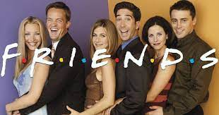
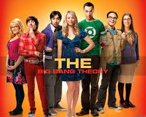

| Poster | Name | Plot |
|---|---|---|
|  | "Friends" | The series is dedicated to the life of six friends: the spoiled "daddy's daughter" Rachel Green (Jennifer Aniston); tidy chef Monica Geller (Courteney Cox); complex wit, office worker Chandler Bing (Matthew Perry); obsessed with sex and food, rustic, waiting for "his" role actor Joey Tribbiani (Matt Leblanc); divorced paleontologist Ross Geller (David Schwimmer); hippie masseuse and singer Phoebe Buffay (Lisa Kudrow).
At the beginning of the series, Rachel leaves her fiancé right at the altar and moves in with her high school friend Monica. They live in an apartment across from Chandler and Joey's. The four are friends with Monica's brother, Ross (who recently divorced his wife, who turned out to be a lesbian), and Phoebe, a girl with no particular profession, Monica's former neighbor. The main action of the series takes place in the apartments of Monica and Chandler and in the Central Perk coffee shop. |
|  | "The Big Bang Theory" | The main characters of the series are young physicists Leonard Hofstadter and Sheldon Cooper - typical representatives of geek culture. They are fond of comics, science fiction series (primarily Star Trek), board and computer games, paintball and attending various fan meetings. These hobbies are shared with them by aerospace engineer Howard Wolowitz and astrophysicist Rajesh Koothrappali. All four friends are closely related to science and work at the California Institute of Technology in Pasadena, California. However, the life of the guys changes dramatically when an aspiring actress and waitress Penny settles on the same landing with Sheldon and Leonard. |